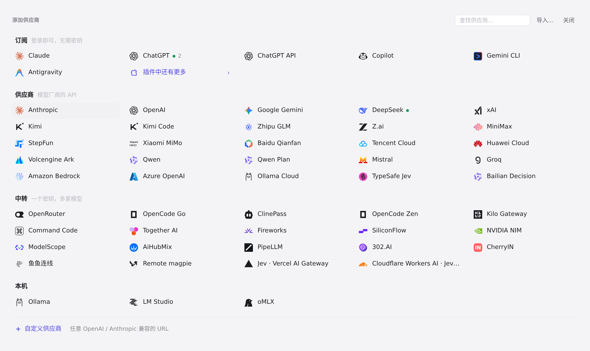
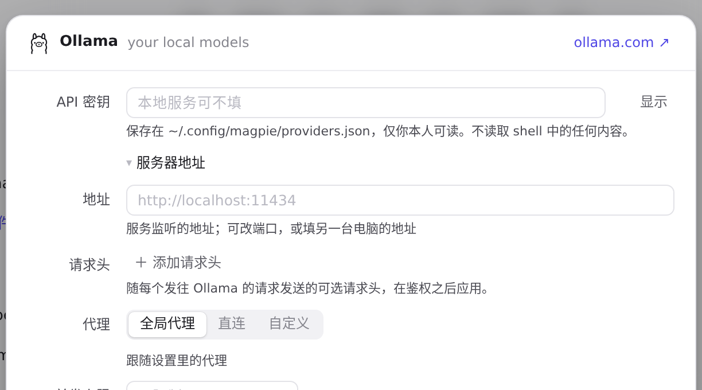
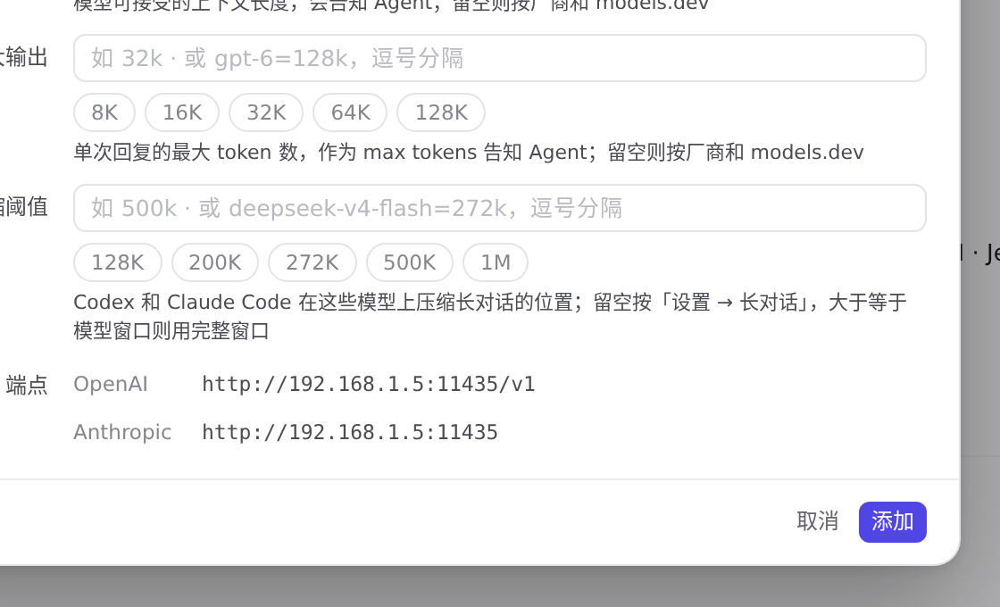

#1165 界面预览
commit 9b3787d · 回到 PR · 本机预设（Ollama、LM Studio、oMLX）的供应商编辑器在密钥字段下方新增了一个默认折叠的「服务器地址」区：可以填另一个端口或另一台电脑的地址，下方终结点预览随之变化，地址不合法时会展开该区、聚焦输入框并给出提示；LM Studio 与 oMLX 的说明文字改为「默认端口 1234/8000」。
红线是鼠标走过的轨迹，红色圆环是一次点击；底部文字是这一步在做什么。空格暂停，← → 逐段查看。

本机预设的服务器地址 · 预设列表里的本机预设：Ollama、LM Studio、oMLX
 本机预设的服务器地址 · Ollama 的编辑器：密钥下方是折叠的「服务器地址」
本机预设的服务器地址 · Ollama 的编辑器：密钥下方是折叠的「服务器地址」
 本机预设的服务器地址 · Ollama 的编辑器：密钥下方是折叠的「服务器地址」
本机预设的服务器地址 · Ollama 的编辑器：密钥下方是折叠的「服务器地址」

本机预设的服务器地址 · 地址框为空，占位符是预设的 http://localhost:11434

本机预设的服务器地址 · 填了地址后编辑器下方的终结点
 本机预设的服务器地址 · 点「添加」后的编辑器
本机预设的服务器地址 · 点「添加」后的编辑器